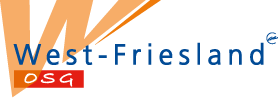
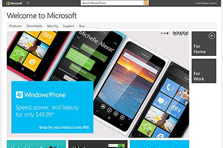
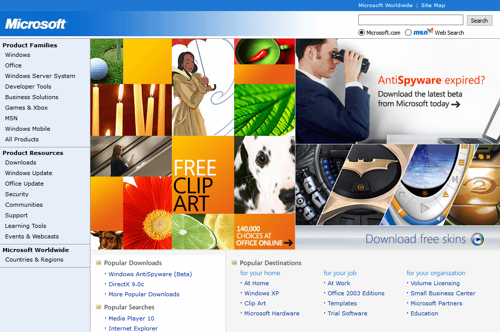

De vierde periode, 2011
De vierde periode begint rond 2011 en wordt omschreven als de sci-fi of platte periode. Er worden veel platte designs gebruikt en er is een breed gebruik van verschillende media, zoals foto’s, video’s en animatie. adaptieve gebruikersinterfaces en responsieve ontwerpelementen worden algemeen aangenomen. Dit soort ‘platte’ ontwerpen zijn terug te zien in het design van de website van Microsoft rond 2012 (zie onderstaande afbeelding).
Knoppen zien er niet meer uit als knoppen, eerder als grote, platte vierkanten. Er is een slideshow van verschillende foto’s en foto’s als uitbreiding van opties. In vergelijking met de Microsoft website van 2005 (de tweede onderstaande afbeelding) is de vooruitgang duidelijk te zien, de knoppen zijn van ‘realistische’ 3d knoppen naar platte vierkanten veranderd, ook zijn de foto’s naar een rol geschoven wat extra informatie toevoegt in plaats van esthetiek.
Deze periode lijkt op het meest op deze website zelf (afgezien van de voorbeelden van de periodes).
